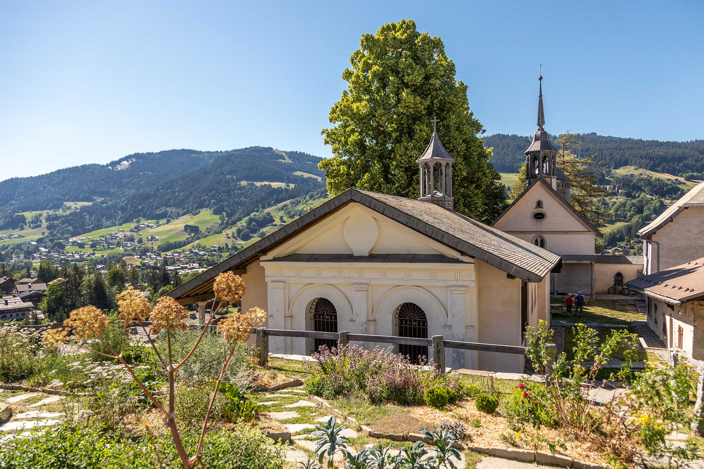
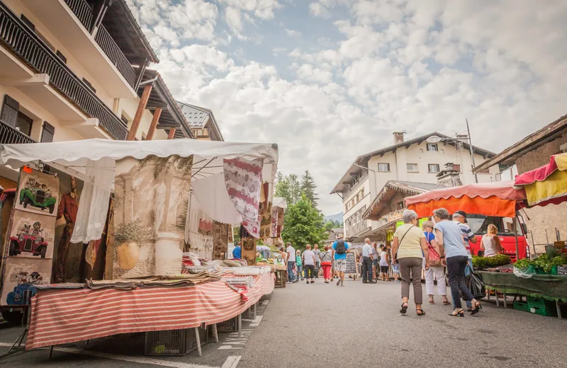
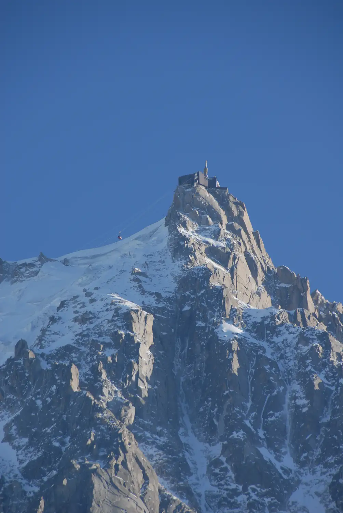
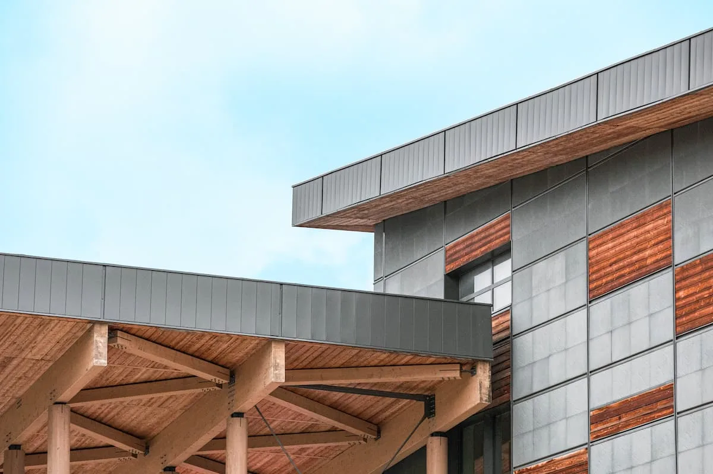
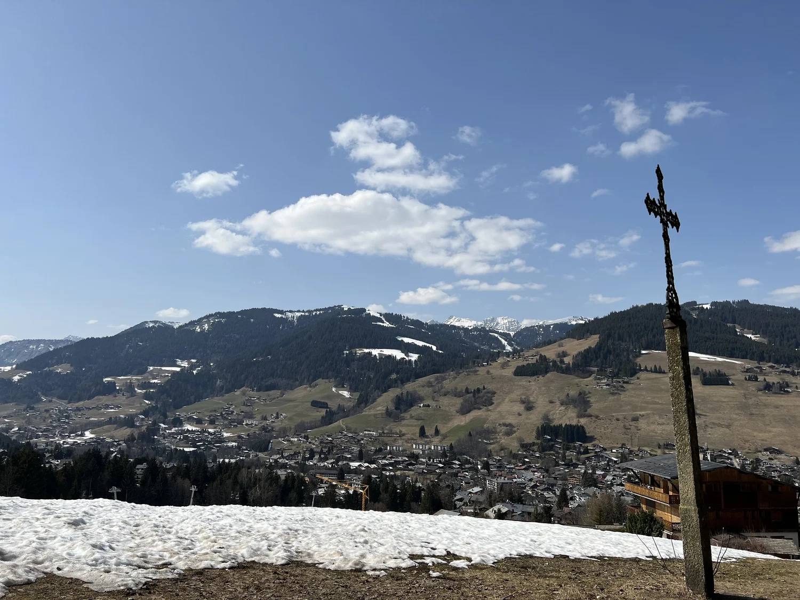

Drop bags. Walk the cobbled core. Baroness de Rothschild built this in 1916 as France's answer to St Moritz[1] — and a real medieval village still sits underneath the luxury layer. The bulbous belfry, the 10-bell carillon, the Place de l'Église. Read the town before the dinner.

Farmhouse Beaufort, charcuterie, mountain honey and seasonal produce at Place du Marché[1]. Pick up provisions. Then detour to Renaut's own deli: Le Garde-Manger[2] — the chef's larder, available to walk into before you sit at his table.
Twenty horse-drawn carriages wait under the big fir in the square[1]. Take one. Most atmospheric after dark when the façades light up. Boutique browsing along the old-town lanes — jewellers, designer houses, artisan shops — between the carriage ride and dinner aperitifs.

The one lift worth the June detour. Cable car to 3,842 m in ~20 min — 2,800 m of vertical, open year-round, ~€75 return[1]. Pair with the Montenvers rack railway to the Mer de Glace in one tight day[2]. Return by 15:00 — spa window before dinner.

A spa session before the tasting menu creates a cleaner evening than arriving stiff from a mountain hike. Three options: Flocons de Sel spa (same property, heated pool, sauna, Swedish bath)[1]; Les Fermes de Marie (Pure Altitude, 1,000 m², 17 treatment rooms)[2]; Le Palais (Olympic pool, public, year-round)[3].

Emmanuel Renaut (Meilleur Ouvrier de France) reopens 5 June[1] after the spring closure. Alpine tasting anchored in lake fish, wild mushrooms, Beaufort crust, smoked chocolate — 5 or 8 courses[2]. Nearly 1,200 wines; exceptional pre-1900 Chartreuse collection; Gault Millau 5 toques[3]. Closed Tue/Wed — confirm your night. The June 5 reopening generates a reservation surge from guests on the spring waitlist.
The Sunday local-producers' market runs on 7 June[1] — local farms only, different vendors from Friday. Beaufort wheels, Reblochon still warm, mountain honey. Pack the car with Haute-Savoie provisions before the drive home. Closes at 13:00 — a natural cut point for departure.
Market closes at 13:00 — clean cut. If time allows, a detour through Saint-Gervais (20 min): Les Bains du Mont-Blanc thermal spa reopens 6 June[1] — a natural halfway decompression before the motorway. Lake Annecy (1hr) as a longer alternative if the weather holds: 20°C water, 13 beaches[2].